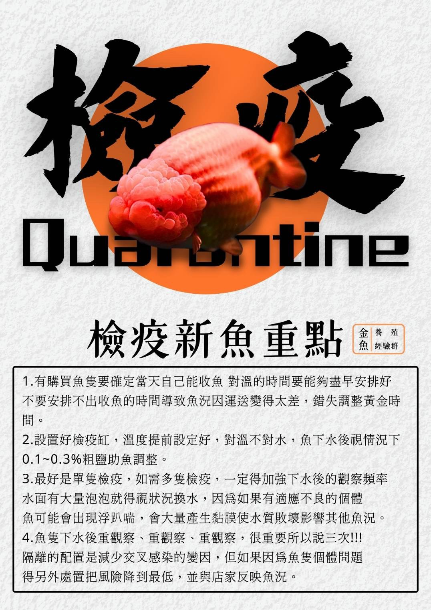

檢疫新魚重點
- 有購買魚隻要確定當天自己能收魚，對溫的時間要能夠盡早安排好，不要安排不出收魚的時間導致魚況因運送變得太差，錯失調整黃金時間。
- 設置好檢疫缸，溫度提前設定好，對溫不對水，魚下水後視情況下0.1~0.3%粗鹽助魚調整。
- 最好是單隻檢疫，如需多隻檢疫，一定得加強下水後的觀察頻率，水面有大量泡泡就得視狀況換水，因為如果有適應不良的個體，魚可能會浮趴喘，會大量產生黏膜使水質敗壞影響其他魚況。
- 魚隻下水後重觀察、重觀察、重觀察，很重要所以說三次！隔離的配置是減少交叉感染的變因，但如果因為魚隻個體問題，得另外處置把風險降到最低，並與店家反映魚況。